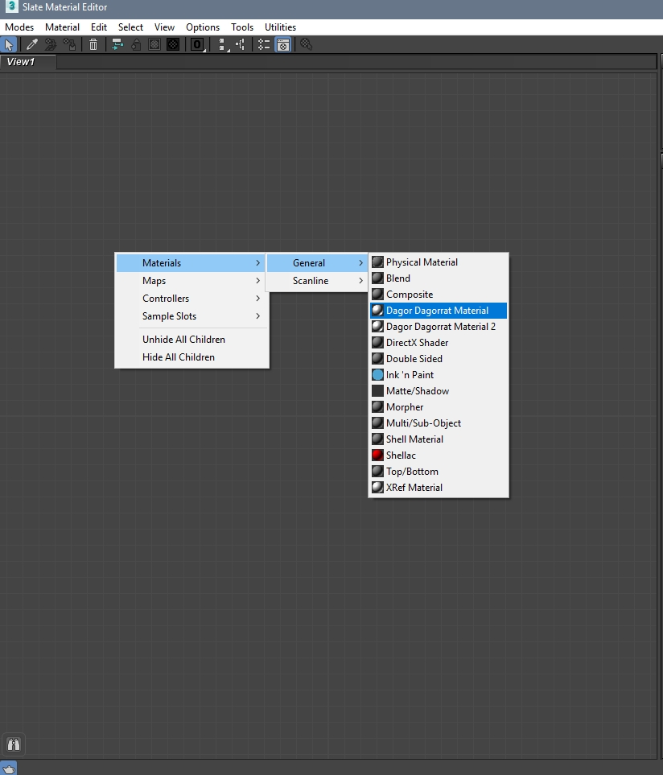
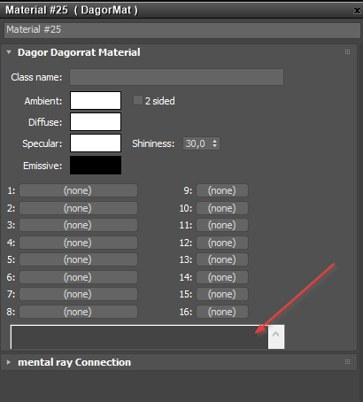
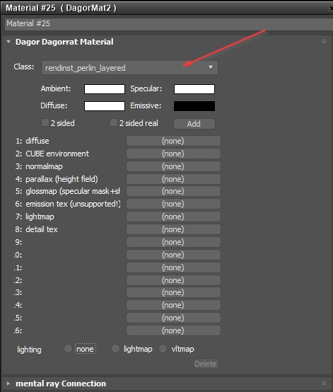
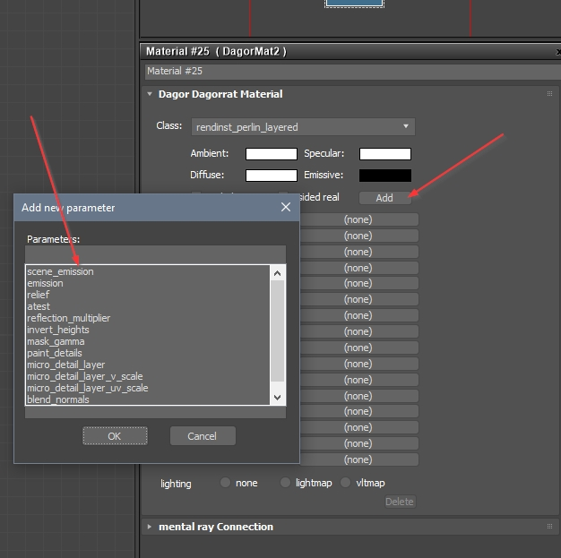
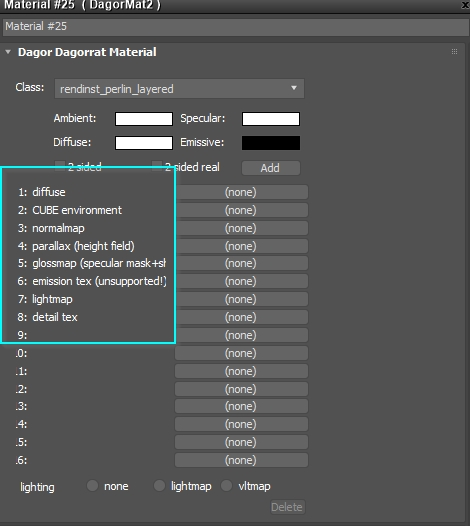
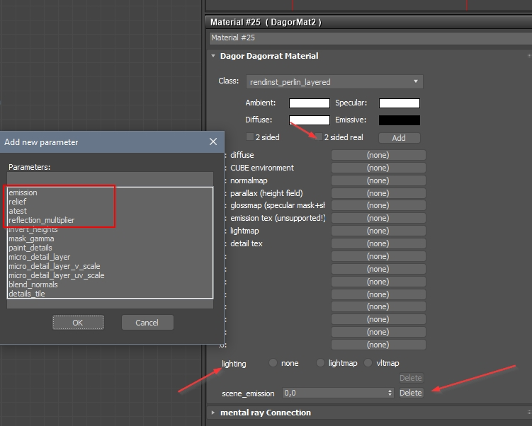

DagorMat
General Information
DagorMat is essentially a collection of shaders for 3ds Max. To access it, open the Material Editor (preferably using the Slate Material Editor), navigate to the General tab, and you should see two materials listed under Dagor Dagorrat Material.
Note
If you don’t see DagorMat listed, press F10 and switch the Renderer
field to Scanline Renderer.

There are two versions available because the original was DagorMat1 (often just called DagorMat), where shader names (class names) and their parameters had to be manually entered. Even now, some shaders have not been migrated to DagorMat2 and thus still open in DagorMat1, with all parameters defined via scripts. This can be cumbersome since 3DsMax’s interface limits the shader parameter display area to just a few lines.

DagorMat2 was likely developed to address these usability issues, allowing you to set all parameters using a mouse-friendly interface.
Shader:

Additional parameters:

Configuring DagorMat Shaders
Since DagorMat1 does not use any preset parameters (everything is manually
scripted), there’s no need for additional configuration. However, DagorMat2
requires that shaders and their parameters be added to the dagorShaders.cfg
files for them to appear in 3ds Max.
These configuration files can be found at:
.../dagor_cdk/windows-x86_64/plugins-3dsMax/
General Configuration Parameters
To configure shaders, open the dagorShaders.cfg file in any text editor.
Texture Slot Names
The first section you’ll encounter:
These parameters:
[_settings]
tex1_name="diffuse"
tex2_name="CUBE environment"
tex3_name="normalmap"
tex4_name="parallax (height field)"
tex5_name="glossmap (specular mask+shininess)"
tex6_name="emission tex (unsupported!)"
tex7_name="lightmap"
tex8_name="detail tex"
control the following:

Global Parameters
These parameters apply to all shaders. While they might not work everywhere, you can set them in any shader. If a shader doesn’t have its own specific parameters, only the global ones will be used.
These parameters:
[_global_params]
lighting=enum(none lightmap vltmap)
real_two_sided=enum(yes no)
scene_emission=real optional
emission=real optional
relief=real optional
atest=text optional
reflection_multiplier=int optional
control the following:

Pay close attention to how different parameter types are displayed and processed in the 3ds Max interface:
enum(none lightmap vltmap)– Enumerations appear as “radio buttons.”enum(yes no)– Boolean options appear as checkboxes.real optional– A “real number” allows you to specify any numerical value.Note
3ds Max does not export zero values unless you manually enter them. If you add a new parameter (which defaults to 0) and don’t replace it with your own zero, the parameter will not be exported.
text optional– string type, typically used when a parameter requires multiple components (e.g.,(1,1,1,1)).int optional– integer type, ranging from negative to positive infinity.
Shader-Specific Parameters
Next, you’ll find parameters specific to each shader. These are defined similarly to the global ones, using the same types of variables.
[rendinst_perlin_layered] // Shader name
invert_heights=text optional // Parameters
mask_gamma=text optional
paint_details=text optional
micro_detail_layer=real optional
micro_detail_layer_v_scale=real optional
micro_detail_layer_uv_scale=real optional
// War Thunder parameters
blend_normals=text optional
details_tile=text optional
Procedural Parameter Update – dagorShadersCfgGenerator-dev.exe
The dagorShaders.cfg file can now be updated using the tool located at
.../tools/util/dagorShadersCfgGenerator-dev.exe.
This tool performs the following steps:
Reads the Parent
dagorShaders.cfg: The tool begins by loading the parentdagorShaders.cfgfile, which serves as the base for updating shader parameters.Reads the Target
dagorShaders.cfg: It then loads the targetdagorShaders.cfg, where the final parameters and shaders will be saved. Usually, this is the same file as the parent, since there are no other shader config files to reference.Loads Shader Dumps: The tool reads a list of shader binaries, either from tool-specific shaders (
tools.ps50.shdump.bin) or game shaders (game.ps50.shdump.bin). Given the variety of projects, shaders differ between them, so you can specify multiple binaries from different projects to consolidate their parameters into a singledagorShaders.cfg.Extracts Shaders and Parameters: The tool extracts all shaders and their parameters from the shader binaries.
Merges Parameters: It merges these extracted parameters into the parent
dagorShaders.cfg, maintaining the structure by only adding new parameters and removing outdated ones.Writes the Final
dagorShaders.cfg: The tool then saves the updated configuration to the targetdagorShaders.cfg.
The tool is run through the command line with the following syntax:
dagorShadersCfgGenerator-dev.exe [parent dagorShaders.cfg] [target dagorShaders.cfg] [shader binary 1 (.ps50.shdump.bin)] [shader binary 2 (.ps50.shdump.bin)] ... [shader binary N (.ps50.shdump.bin)]
Important
Exercise Caution! The tool should not be fully trusted due to frequent changes in the shader environment. After each update, always perform a
diffcomparison with the current version and carefully review any differences.Potential Issues: The tool may occasionally omit certain parameters or fail to locate shaders that you know exist.